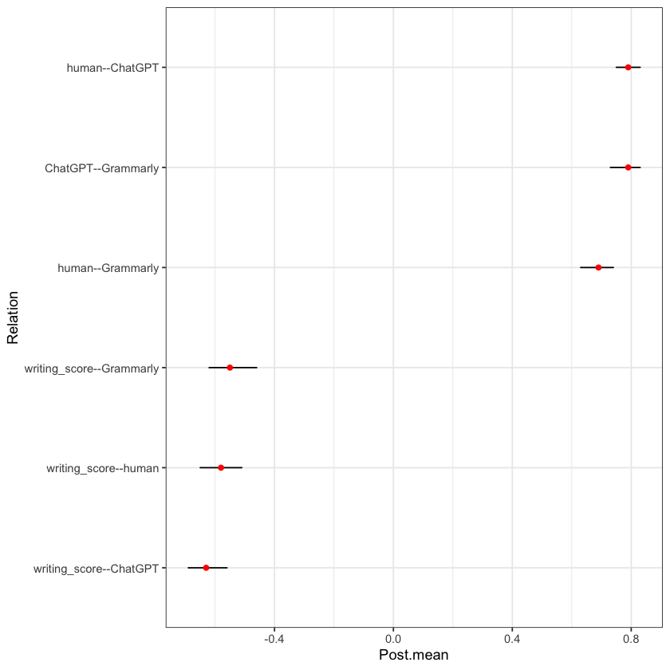
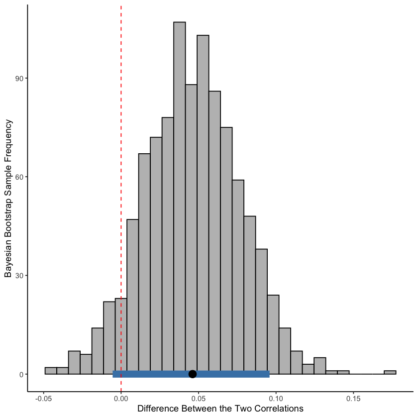

The package is not available on CRAN, so first download “bayeslincom_1.3.0.tar.gz” from the repository. https://cran.r-project.org/src/contrib/Archive/bayeslincom/
Install from a stored file in a local computer.
install.packages(“bayeslincom_1.3.0.tar.gz”, repos = NULL, type = “source”) devtools::install_github(“donaldRwilliams/BBcor”)
Show code
library(BBcor)dat <-read.csv("accuracy_df.csv")df <- dat[,5:8]set.seed(114514)bb_tau <-bbcor(df, method ="spearman", iter =1000, cores =1)bb_summary <-summary(bb_tau, ci =0.9)bb_summarylibrary(ggplot2)plot(bb_tau) +theme_bw()
A data.frame: 6 × 5
Relation
Post.mean
Post.sd
Cred.lb
Cred.ub
<chr>
<dbl>
<dbl>
<dbl>
<dbl>
writing_score--human
-0.58
0.04
-0.65
-0.51
writing_score--ChatGPT
-0.63
0.04
-0.69
-0.56
human--ChatGPT
0.79
0.03
0.75
0.83
writing_score--Grammarly
-0.55
0.05
-0.62
-0.46
human--Grammarly
0.69
0.03
0.63
0.74
ChatGPT--Grammarly
0.79
0.03
0.73
0.83

Research Question 1
Show code
comparisons1 <-c("writing_score--human - writing_score--ChatGPT = 0")post_comparisons1 <-compare(comparisons1, obj = bb_tau, cred =0.9) #, rope = c(-0.10, 0.10)post_comparisons1str(post_comparisons1)plot(post_comparisons1) + ggplot2::theme_classic() +geom_vline(xintercept =0, linetype ="dashed", color ="red") +xlab("Difference Between the Two Correlations") +ylab("Bayesian Bootstrap Sample Frequency")
------
Call:
lin_comb.bbcor(lin_comb = lin_comb, obj = obj, ci = ci, rope = rope,
contrast = contrast)
------
Combinations:
C1: writing_score--human - writing_score--ChatGPT = 0
------
Posterior Summary:
Post.mean Post.sd Cred.lb Cred.ub Pr.less Pr.greater
C1 0.05 0.03 -0.01 0.1 0.06 0.94
------
Note:
Pr.less: Posterior probability less than zero
Pr.greater: Posterior probability greater than zero
List of 3
$ results:List of 1
..$ C1:List of 8
.. ..$ lin_comb : chr "writing_score--human - writing_score--ChatGPT = 0"
.. ..$ rope_overlap: NULL
.. ..$ samples : num [1:1000] 0.06973 0.0592 0.07311 -0.00112 0.03155 ...
.. ..$ ci : Named num [1:2] -0.00546 0.09581
.. .. ..- attr(*, "names")= chr [1:2] "5%" "95%"
.. ..$ mean_samples: num 0.0461
.. ..$ sd_samples : num 0.0307
.. ..$ prob_greater: num 0.935
.. ..$ support : NULL
$ ci : num 0.9
$ call : language lin_comb.bbcor(lin_comb = lin_comb, obj = obj, ci = ci, rope = rope, contrast = contrast)
- attr(*, "class")= chr "bayeslincom"

Research Question 2
Show code
comparisons <-c("human--ChatGPT - human--Grammarly = 0","writing_score--ChatGPT - writing_score--Grammarly = 0")post_comparisons <-compare(comparisons, obj = bb_tau, cred =0.9) #, rope = c(-0.10, 0.10)post_comparisons# For changing the graph titlespost_comparisons$results$C1$lin_comb <-"With Human: ChatGPT - Grammarly"post_comparisons$results$C2$lin_comb <-"With Writing Score: ChatGPT - Grammarly"plot(post_comparisons) + ggplot2::theme_classic() +theme(plot.margin =margin(t =10, r =20, b =10, l =10, unit ="pt")) +geom_vline(xintercept =0, linetype ="dashed", color ="red") +xlab("Difference Between the Two Correlations") +ylab("Bayesian Bootstrap Sample Frequency")+ylim(0, 135)
------
Call:
lin_comb.bbcor(lin_comb = lin_comb, obj = obj, ci = ci, rope = rope,
contrast = contrast)
------
Combinations:
C1: human--ChatGPT - human--Grammarly = 0
C2: writing_score--ChatGPT - writing_score--Grammarly = 0
------
Posterior Summary:
Post.mean Post.sd Cred.lb Cred.ub Pr.less Pr.greater
C1 0.10 0.03 0.05 0.15 0.00 1.00
C2 -0.08 0.04 -0.15 -0.02 0.98 0.02
------
Note:
Pr.less: Posterior probability less than zero
Pr.greater: Posterior probability greater than zero